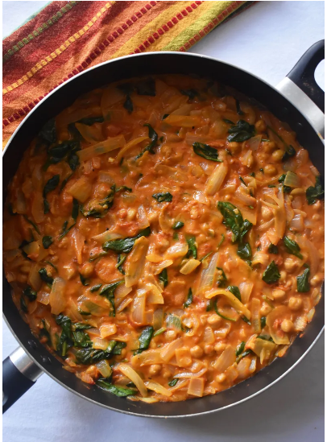

VEGAN CURRY

Ingredients
- 2 tablespoons coconut oil
- 2 medium yellow onions, chopped
- salt and pepper, to taste
- 16 ounces canned chickpeas, drained and rinsed
- 3 garlic cloves, minced
- 1 package baby spinach
- 13.5 ounces canned coconut milk
Instructions
- Add coconut oil to a deep pan over medium-high heat.
- Add onions, tomatoes, salt, and pepper to the pan, and stir. Reduce heat to medium and cook until tomatoes release juices and onions soften, about 10 minutes.
- Stir in chickpeas, garlic, curry powder, cumin, cinnamon, nutmeg, and cayenne pepper until combined. Add spinach, coconut milk, and flour, and stir again. Bring the curry to a boil, then reduce to a simmer for 10-12 minutes.